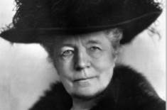

Lite information om Selma Lagerlöf
Selma Ottilia Lovisa Lagerlöf, född 20 november 1858 på Mårbacka i Östra Ämterviks församling i Värmland, död 16 mars 1940 på Mårbacka, är en av Sveriges mest framgångsrika och uppskattade författare. Selma Lagerlöf var 33 år när hennes debutroman Gösta Berlings saga utgavs 1891. Hon tilldelades Nobelpriset i litteratur 1909.
Lagerlöf var den första kvinnan i Svenska Akademien och den första kvinna som fick Nobelpriset i litteratur. Hon var även en av ursprungsledamöterna i Samfundet De Nio.
Även om Lagerlöf förknippas med Mårbacka bodde och verkade hon i Falun under många år, och det var där hon skrev några av sina främsta verk. Även sedan hon flyttat tillbaka till Mårbacka återvände hon flera gånger om året till Falun.
Källa Min källa